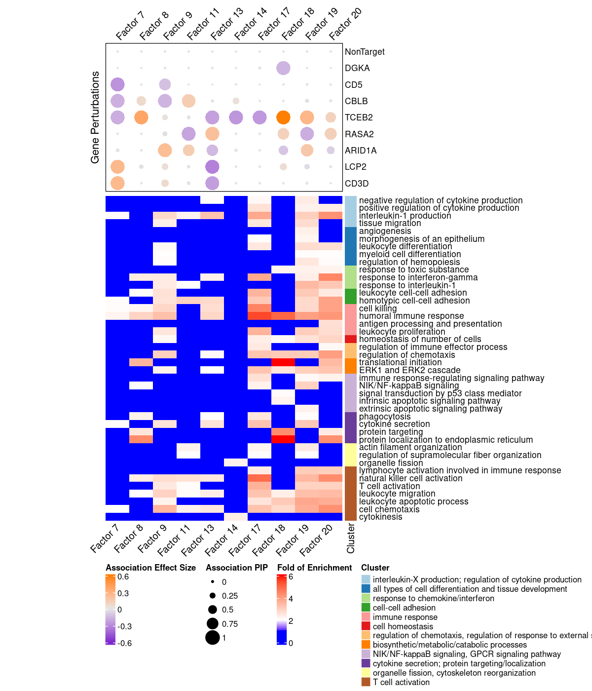

Functional Analysis on Stimulated T Cell CROP-seq GSFA Results
-- 2 donors pooled, batch effect and 3 other covariates corrected
Yifan Zhou (zhouyf@uchicago.edu)
2021-04-19
1 GSFA on Stimulated T Cell CROP-seq Data
1.1 Data Processing
Cells:
Primary human CD8+ T cells from two healthy donors, with T cell receptor (TCR) stimulation. Cells from 2 donors were pooled together into 1 analysis.
All cells have only a single type of gRNA readout. Quality control resulted in 13983 cells.
Genes:
Only genes detected in > 10% of cells were kept, resulted in 6062 genes.
Normalization:
Seurat "LogNormalize": log(count per 10K + 1).
Batch effect, unique UMI count, library size, and mitochondria percentage were all corrected for. The corrected and scaled expression data were used as input for subsequent factor analysis.
1.2 GSFA Results (SVD Initialization)
Here, our "guide", \(G\) matrix, consists of 15 types (14 genes + NTC) of gene-level knock-down conditions across cells.
Gibbs sampling was initiated from SVD, and conducted for 2000 iterations; the posterior mean estimates were averaged over the last 500 iterations.
1.2.1 Estimate of Factor ~ Perturbation Associations (\(\beta\))
We compared the CDF of GSFA factor-guide association p values (20 \(\times\) 21 in total) with the CDF of p values obtained from chi-square tests that assess over/under-representation of guides in cell clusters (presented here).
1.2.2 DEGs (LFSR < 0.05) under Each Perturbation
Number of genes that passed GSFA LFSR < 0.05 under each perturbation:

Overlap of GSFA DEGs between perturbations:
2 Gene Set Enrichment Analysis (GSEA)
WebGestalt parameter settings:
gene set size: 10-500, fdr < 0.1, num_perm: 1000, num_categories_expect: 10.
Gene weights \(W\) in each factor are used as the "fold changes" in GSEA;
1000 permutations were used to determine the significance of the enrichment score;
NES stands for normalized enrichment score, which is normalized to account for the size of each gene set;
Positive NES: genes in this set tend to be up-regulated;
Negative NES: genes in this set tend to be down-regulated.
Only gene sets within the size of 10 ~ 500 and have an enrichment FDR < 0.1 are kept.
2.1 Reactome pathway GSEA (all 6k genes)
Factor 8 : 68 significant Reactome
| Factor 9 : 7 significant Reactome |
|---|
| Factor 11 : 68 significant Reactome |
Factor 14 : 226 significant Reactome
| Factor 16 : 34 significant Reactome |
|---|
| Factor 17 : 1 significant Reactome |
Factor 18 : 35 significant Reactome
| Factor 19 : 1 significant Reactome |
|---|
| Factor 20 : 10 significant Reactome |
- Factor 8
Up-regulated: rRNA processing;
Down-regulated: Adaptive Immune System, MHC antigen presentation, Interferon Signaling
- Factor 9
Up-regulated: MHC antigen presentation, Interferon Signaling
- Factor 11
Down-regulated: Platelet activation, signaling and aggregation, PD-1 signaling
- Factor 14
Up-regulated: RUNX1 regulates genes in differentiation of HSCs (hematopoietic stem cells), Apoptosis;
Down-regulated: Mitotic Prometaphase, Metaphase and Anaphase
- Factor 17
Up-regulated: MHC class II antigen presentation
- Factor 18
Down-regulated: rRNA processing, Translation
- Factor 19
Up-regulated: Transcriptional regulation by RUNX1
- Factor 20
Down-regulated: MHC class II antigen presentation, Interferon Signaling
2.2 Reactome pathway GSEA (only the genes w/ PIP > 0.95 in each factor)
Factor 7 : 3 significant Reactome
| Factor 8 : 71 significant Reactome |
|---|
| Factor 9 : 12 significant Reactome |
Factor 11 : 58 significant Reactome
| Factor 13 : 12 significant Reactome |
|---|
| Factor 14 : 140 significant Reactome |
Factor 16 : 52 significant Reactome
| Factor 17 : 13 significant Reactome |
|---|
| Factor 18 : 39 significant Reactome |
Factor 19 : 1 significant Reactome
| Factor 20 : 8 significant Reactome |
GSEA results are similar to before in general, and on top of that, factor 7 and 13 now have enriched terms as well.
- Factor 7
Down-regulated: Cytokine Signaling in Immune system, MHC class II antigen presentation, Signaling by Interleukins
- Factor 8
Up-regulated: rRNA processing;
Down-regulated: Adaptive Immune System, MHC antigen presentation, Interferon Signaling
- Factor 9
Up-regulated: MHC antigen presentation, PD-1 signaling
- Factor 11
Down-regulated: Platelet activation, signaling and aggregation, PD-1 signaling - Factor 13
Down-regulated: Antigen Presentation, Cytokine Signaling in Immune system, Interferon Signaling
- Factor 14
Up-regulated: RUNX1 regulates genes in differentiation of HSCs (hematopoietic stem cells), Apoptosis;
Down-regulated: Mitotic Prometaphase, Metaphase and Anaphase
- Factor 17
Up-regulated: MHC class II antigen presentation
- Factor 18
Down-regulated: rRNA processing, Translation - Factor 19
Up-regulated: Signaling by Interleukins
- Factor 20
Down-regulated: MHC class II antigen presentation, Interferon Signaling
3 Gene Set Over-representation Analysis (ORA)
3.1 GO Slim ORA
Target genes: Genes w/ non-zero loadings in each factor (PIP cutoff at 0.95);
Backgroud genes: all 6062 genes included in factor analysis;
Statistical test: hypergeometric test (over-representation test);
Gene sets: GO Slim "Biological Process" (non-redundant);
Only GO gene sets within the size of 10 ~ 500 and have an enrichment FC > 2 and FDR < 0.05 are kept.
Factor 7 : 36 significant GO terms
| Factor 8 : 27 significant GO terms |
|---|
| Factor 9 : 81 significant GO terms |
Factor 11 : 31 significant GO terms
| Factor 13 : 57 significant GO terms |
|---|
| Factor 14 : 20 significant GO terms |
Factor 16 : 6 significant GO terms
| Factor 17 : 106 significant GO terms |
|---|
| Factor 18 : 50 significant GO terms |
Factor 19 : 120 significant GO terms
| Factor 20 : 75 significant GO terms |
| Factor | 1 | 2 | 3 | 4 | 5 | 6 | 7 | 8 | 9 | 10 |
| Signif_GO_terms | 0 | 0 | 0 | 0 | 0 | 2 | 36 | 27 | 81 | 0 |
| Factor | 11 | 12 | 13 | 14 | 15 | 16 | 17 | 18 | 19 | 20 |
| Signif_GO_terms | 31 | 7 | 57 | 20 | 6 | 6 | 106 | 50 | 120 | 75 |
3.2 Clusering of Significant Gene Ontology BP Terms
We used the "Wang" method in GOSemSim to measure the similarity between GO BP terms, and all the significant terms in factors of interest were further grouped into 12 clusters using hierarchical clustering with the "ward.D" agglomeration method. The clustering results of all these GO BP terms are stored here.
Gene Ontology BP terms of interest:

3.3 Significant GO BP terms (and their clustering) presented using CirGO
3.3.1 Terms in All Factors of Interest

3.3.2 Terms in Factor 7

3.3.3 Terms in Factor 8

3.3.4 Terms in Factor 9

3.3.5 Terms in Factor 11

3.3.6 Terms in Factor 13

3.3.7 Terms in Factor 14
3.3.8 Terms in Factor 17

3.3.9 Terms in Factor 18

3.3.10 Terms in Factor 19